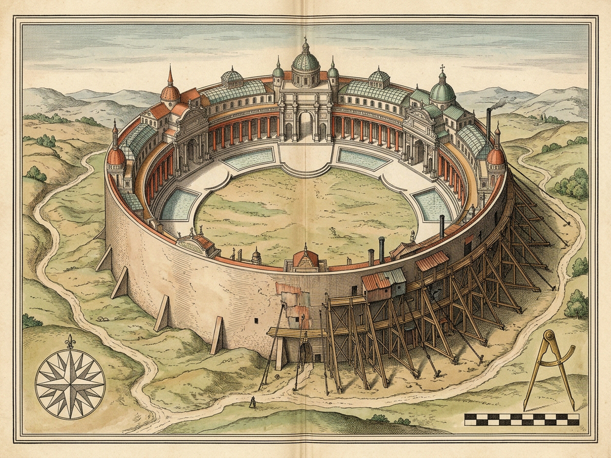
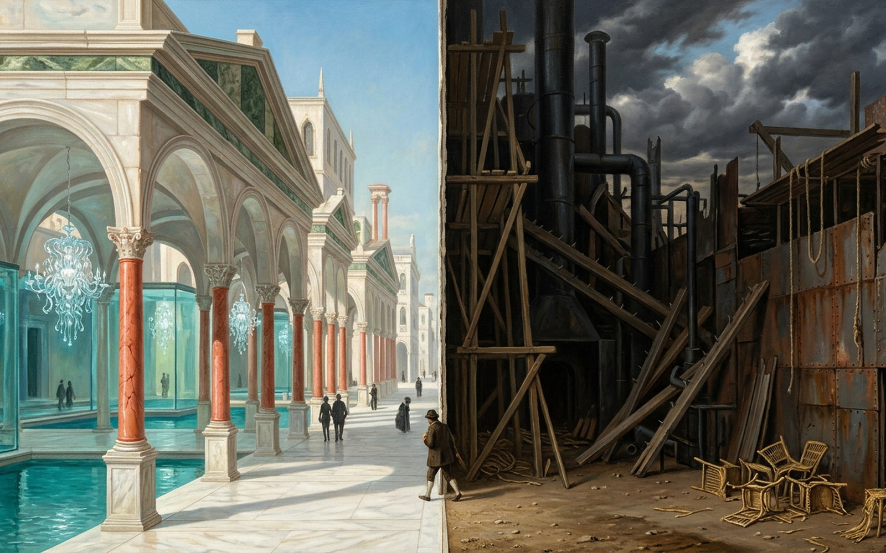

Moriana
Sunlit Alabaster Facade · Semicircular Bay Walk · Inseparable Soot Reverse
Thickness: 0.000 mm
Azimuth: 0.0°
Face: OBVERSE
90° Flips: 0
Obverse Glaze
0 / 5
O1
Alabaster Gates
O2
Coral Columns
O3
Serpentine Pediments
O4
Glass Aquarium Villas
O5
Medusa & Scaled Dancers
Thickness
0.000 mm
Azimuth
0.0°
|cos θ|
1.000
Back face occluded · 0.000 mm sheet
90.0° RAZOR PAPER EDGE · 0.000 mm VOLUME
Sunlit Alabaster Threshold (0°)
Full-bleed obverse projection · drag or walk the bay arc
Gates of alabaster gleam transparent in the noon glare beside coral columns, serpentine pediments, turquoise aquarium villas, and silvery-scaled dancers under medusa chandeliers.
Touch a landmark or walk the semicircle around the bay toward 90° to test what stands behind this sheet.
Reverse Soot
0 / 8
R1
Rusting Sheet Metal
R2
Torn Sackcloths
R3
Spike-Bristling Planks
R4
Soot-Black Pipes
R5
Piles of Tins
R6
Blind Walls & Signs
R7
Staved-In Straw Chairs
R8
Rotten-Beam Ropes
0.0° · OBVERSE
O
0° Obverse
E
90° Razor Edge
V
180° Reverse
W
Walk Semicircle
X
Test Separation
M
Audio: Muted
P
Royal Plates
R
Reset
Moriana Royal Plates · Cartographic & Architectural Witness
Diptych
Survey Map
Visual Plate
Z
Loupe: 1.0x
Esc
Close

Cartographic Survey · Semicircular Bay & Zero-Thickness Axis (1600×1200)

Visual Plate · Alabaster Obverse & Soot-Iron Reverse (1600×1000)
Optical Loupe Standby · Press [Z] to toggle 1.85× inspection magnification